1. Los protones en el núcleo no cambian durante las reacciones químicas normales. Solo se mueven los electrones externos. Se forman cargas positivas cuando se pierden electrones.
3. P, I, Cl y O formarían aniones porque no son metales. Mg, In, Cs, Pb y Co formarían cationes porque son metales.
5. (a) $P^{3–}$; (b) $Mg^{2+}$; (c) $Al^{3+}$; (d) $O^{2–}$; (e) $Cl^–$; (f) $Cs^+$
7. (a) [Ar] $4s^23d^{10}4p^6$; (b) [Kr] $4d^{10}5s^25p^6$ (c) $1s^2$ (d) [Kr] $4d^{10}$; (e) [He] $2s^22p^6$; (f) [Ar] $3d^{10}$; (g) $1s^2$ (h) [He] $2s^22p^6$ (i) [Kr] $4d^{10}5s^2$ (j) [Ar] $3d^7$ (k) [Ar] $3d^6$, (l) [Ar] $3d^{10}4s^2$
9. (a) $1s^22s^22p^63s^23p^1$; $Al^{3+}$: $1s^22s^22p^6$; (b) $1s^22s^22p^63s^23p^63d^{10}4s^24p^5$; $1s^22s^22p^63s^23p^63d^{10}4s^24p^6$; (c) $1s^22s^22p^63s^23p^63d^{10}4s^24p^65s^2$; $Sr^{2+}$: $1s^22s^22p^63s^23p^63d^{10}4s^24p^6$; (d) $1s^22s^1$; $Li^+$: $1s^2$; (e) $1s^22s^22p^63s^23p^63d^{10}4s^24p^3$; $1s^22s^22p^63s^23p^63d^{10}4s^24p^6$; (f) $1s^22s^22p^63s^23p^4$; $1s^22s^22p^63s^23p^6$
11. El $NaCl$ consiste en iones discretos dispuestos en una red cristalina, no en moléculas unidas covalentemente.
13. iónico: (b), (d), (e), (g) y (i); covalente: (a), (c), (f), (h), (j) y (k)
15. (a) Cl; (b) O; (c) O; (d) S; (e) N; (f) P; (g) N
17. (a) H, C, N, O, F; (b) H, I, Br, Cl, F; (c) H, P, S, O, F; (d) Na, Al, H, P, O; (e) Ba, H, As, N, O
19. N, O, F y Cl
21. (a) HF; (b) CO; (c) OH; (d) PCl; (e) NH; (f) PO; (g) CN
23. (a) ocho electrones:
b) ocho electrones:
(c) sin electrones $Be^{2+}$
(d) ocho electrones:
(e) sin electrones $Ga^{3+}$
(f) sin electrones $Li^+$
(g) ocho electrones:
25.
(a)
(b)
(c)
(d)
(e)
(f)
29.
(a)
En este caso, la estructura de Lewis es inadecuada para representar el hecho de que los estudios experimentales han mostrado dos electrones no apareados en cada molécula de oxígeno.
(b)
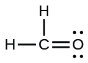
(c)
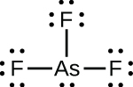
(d)
(e)
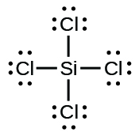
(f)
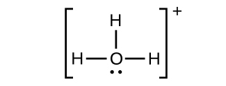
(g)
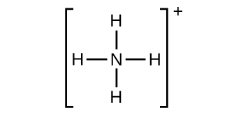
(h)
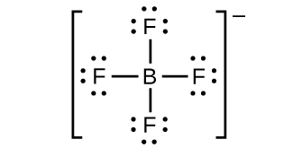
(i)
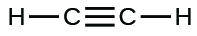
(j)
(k)
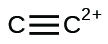
31. (a) $SeF_6$:
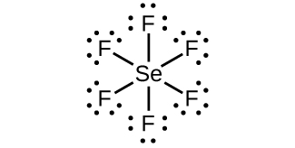
(b) $XeF_4$:
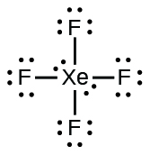
(c) $SeCl_3^+$:
(d) $Cl_2BBCl_2$:
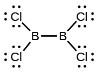
33. Dos electrones de valencia por átomo de $Pb$ se transfieren a átomos de $Cl$; El ion $Pb^{2+}$ resultante tiene una configuración de valencia de $6s^2$. Dos de los electrones de valencia en la molécula de $HCl$ son compartidos, y los otros seis están ubicados en el átomo de $Cl$ como pares de electrones solitarios.
35.
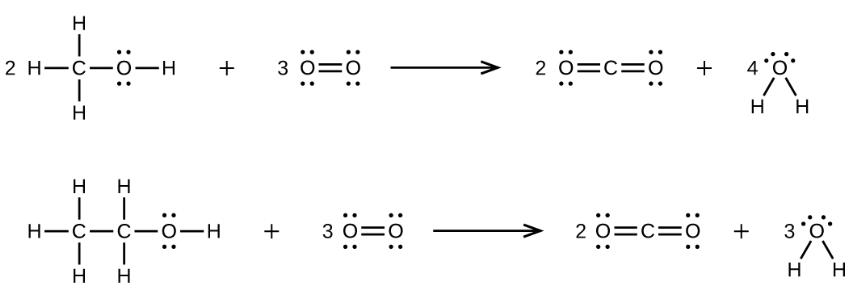
37.
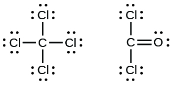
39.
(a)
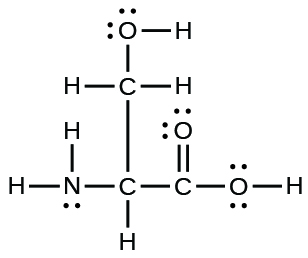
(b)
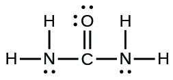
(c)
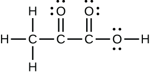
(d)
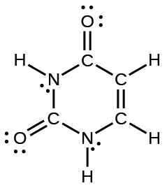
(e)
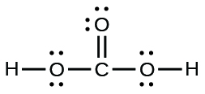
41.
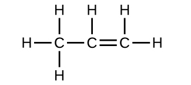
43. Cada enlace incluye un reparto de electrones entre átomos. Dos electrones se comparten en un solo enlace; cuatro electrones se comparten en un doble enlace; y seis electrones se comparten en un triple enlace.
45.
(a)
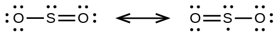
(b)
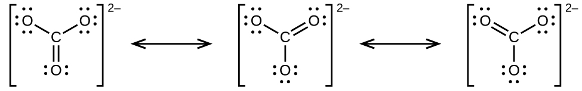
(c)
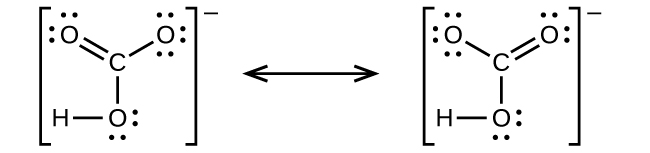
(d)
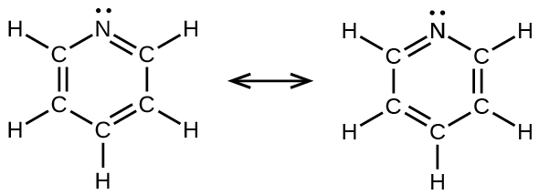
(e)
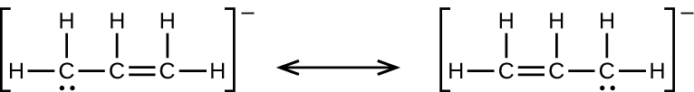
47.
49.
(a)
(b)
El $CO$ tiene el enlace carbono-oxígeno más fuerte porque hay un enlace triple que une $C$ y $O$. El $CO_2$ tiene enlaces dobles.
51. (a) H: 0, Cl: 0; (b) C: 0, F: 0; (c) P: 0, Cl 0; (d) P: 0, F: 0
53. $Cl$ en $Cl_2$: 0; $Cl$ en $BeCl_2$: 0; $Cl$ en $ClF_5$: 0
55.
(a)
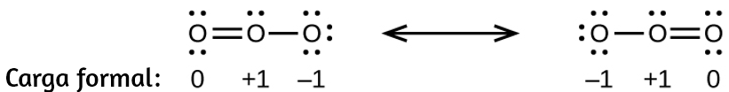
(b)
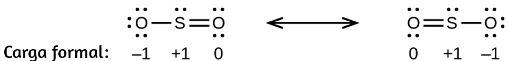
(c)
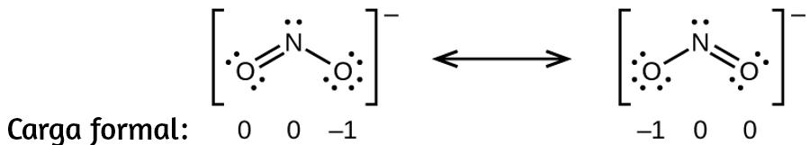
(d)
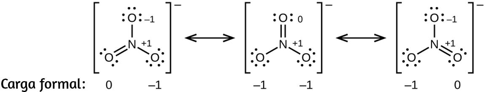
57. $HOCl$
59. La estructura que da cero cargas formales es consistente con la estructura real:
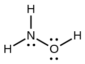
61. $NF_3$;
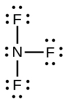
63.
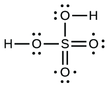
65. (a) −114 kJ; (b) 30 kJ; (c) −1055 kJ
67. La mayor energía de enlace está en la figura de la izquierda. Es la forma más estable.
69.
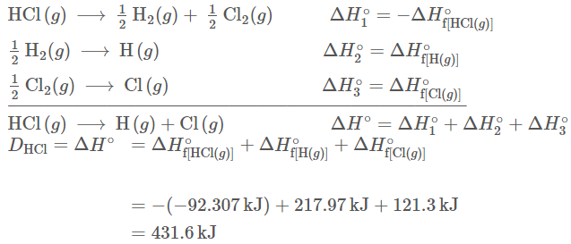
71. El enlace $\ce{S – F}$ en $SF_4$ es más fuerte.
73.
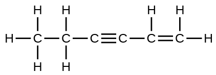
Los enlaces simples $\ce{C – C} son los más largos.
75. (a) Cuando se eliminan dos electrones de la capa de valencia, el radio de $Ca$ pierde el nivel de energía más externo y vuelve al nivel inferior n = 3, que es mucho más pequeño en radio. (b) La carga de +2 en el calcio atrae el oxígeno mucho más en comparación con $K$, lo que aumenta la energía de la red en relación con un ion menos cargado. (c) La eliminación del electrón 4s en $Ca$ requiere más energía que la eliminación del electrón 4s en $K$ debido a la atracción más fuerte del núcleo y la energía adicional requerida para romper el emparejamiento de los electrones. La segunda energía de ionización para $K$ requiere que un electrón se elimine de un nivel de energía más bajo, donde la atracción es mucho más fuerte del núcleo para el electrón. Además, se requiere energía para desemparejar dos electrones en un orbital completo. Para $Ca$, el segundo potencial de ionización requiere eliminar solo un electrón solitario en el nivel de energía exterior expuesta. (d) En $Al$, el electrón eliminado está relativamente desprotegido y no apareado en un orbital p. La mayor energía para el $Mg$ refleja principalmente el desemparejamiento del electrón 2s.
77. (d)
79. 4008 kJ/mol; ambos iones en $MgO$ tienen el doble de carga que los iones en $LiF$; la longitud del enlace es muy similar y ambos tienen la misma estructura; se espera un cuadruplicado de la energía basado en la ecuación para la energía de la red
81. (a) $Na_2O$; $Na^+$ tiene un radio menor que $K^+$; (b) $BaS$; $Ba$ tiene una carga mayor que $K$; (c) $BaS$; $Ba$ y $S$ tienen cargas más grandes; (d) $BaS$; $S$ tiene una carga mayor
83. (e)
85. La colocación de los dos conjuntos de electrones no apareados en el agua obliga a los enlaces a asumir una disposición tetraédrica, y la molécula $HOH$ resultante se dobla. La molécula $HBeH$ (en la que $Be$ solo tiene dos electrones para unirse con los dos electrones de los hidrógenos) debe tener los pares de electrones lo más lejos posible entre sí y, por lo tanto, es lineal.
87. Se debe proporcionar espacio para cada par de electrones, ya sea que estén en un enlace o estén presentes como pares solitarios. La geometría de pares de electrones considera la colocación de todos los electrones. La estructura molecular considera solo la geometría del par de unión.
89. Mientras se compensen los enlaces polares (por ejemplo, se encuentran dos átomos idénticos directamente a través del átomo central entre sí), la molécula puede ser no polar.
91. (a) Tanto la geometría electrónica como la estructura molecular son octaédricas. (b) Tanto la geometría electrónica como la estructura molecular son bipirámides trigonales. (c) Tanto la geometría electrónica como la estructura molecular son lineales. (d) Tanto la geometría electrónica como la estructura molecular son trigonales planas.
93. (a) La geometría de pares de electrones: octaédrica, estructura molecular: piramidal cuadrada; (b) geometría de pares de electrones: tetraédrica, estructura molecular: doblada; (c) geometría de pares de electrones: octaédrica, estructura molecular: plana cuadrada; (d) geometría de pares de electrones: tetraédrica, estructura molecular: piramidal trigonal; (e) geometría de pares de electrones: trigonal, piramidal, estructura molecular: balancín; (f) geometría de pares de electrones: tetraédrica, estructura molecular: doblada (109°)
95. (a) La geometría de pares de electrones: plano trigonal, estructura molecular: doblado (120°); (b) geometría de pares de electrones: lineal, estructura molecular: lineal; (c) geometría de pares de electrones: plano trigonal, estructura molecular: plano trigonal; (d) geometría de pares de electrones: tetraédrica, estructura molecular: piramidal trigonal; (e) geometría de pares de electrones: tetraédrica, estructura molecular: tetraédrica; (f) geometría de par de electrones: bipiramidal trigonal, estructura molecular: balancín; (g) geometría de pares de electrones: tetraédrica, estructura molecular: piramidal trigonal
97. Todas estas moléculas e iones contienen enlaces polares. Solo $ClF_5$, $ClO^{2−}$, $PCl_3$, $SeF_4$ y $PH^{2−}$ tienen momentos dipolares.
99. $SeS_2$, $CCl_2F_2$, $PCl_3$ y $ClNO$ tienen momentos dipolares.
101. P
103. no polar
105. (a) tetraédrica; (b) piramidal trigonal; (c) doblado (109°); (d) plano trigonal; (e) doblado (109°); (f) doblado (109°); (g) $CH_3CCH$ tetraédrico, $CH_3CCH$ lineal; (h) tetraédrica; (i) $H_2CCCH_2$ lineal; $H_2CCCH_2$ trigonal plano
107.
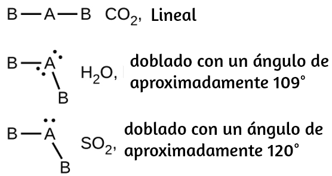
109.
(a)
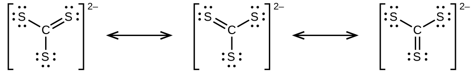
(b)
(c)
(d) El $CS_3^{2−}$ incluye tres regiones de densidad electrónica (todas son enlaces sin pares solitarios); la forma es trigonal plana; $CS_2$ tiene solo dos regiones de densidad electrónica (todos los enlaces sin pares solitarios); la forma es lineal
111. La estructura de Lewis está hecha de tres unidades, pero los átomos deben reorganizarse:
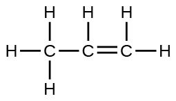
113. El dipolo molecular apunta lejos de los átomos de hidrógeno.
115. Las estructuras son muy similares. En el modo modelo, cada grupo de electrones ocupa la misma cantidad de espacio, por lo que el ángulo de enlace se muestra como 109.5°. En el modo "real", los pares solitarios son más grandes, lo que hace que los hidrógenos se compriman. Esto conduce al ángulo más pequeño de 104.5°.